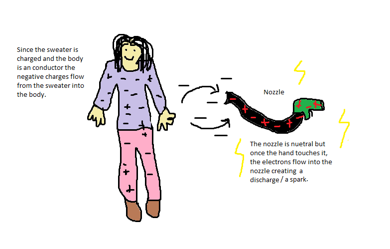

How materials become charged
When the person reenters her car, her sweater
rubs against the seat, transferring the negative charges from the seat to her sweater,
making her sweater negatively charged and the chair positively charged.
Since you body is a conductor, the negative charges are allowed to flow from her sweater into her
body. When the lady goes to touch the nozzle there is a discharge or spark because
when there is a difference of charges in a conductor, the conductor's charges, when jumping to another conductor
produces a spark; a spark would not be created if a difference of charges jumps from a conductor
to an insulator.


a
a
How to avoid getting a shock
If you want to avoid building up static try to wear
clothing that can't gain or loose negative charges easally and don't rub against stuff.
If static builds up anyway you can easally get rid of the charges by touching a wall or any
objects that are harmless and a insulator.
a
a